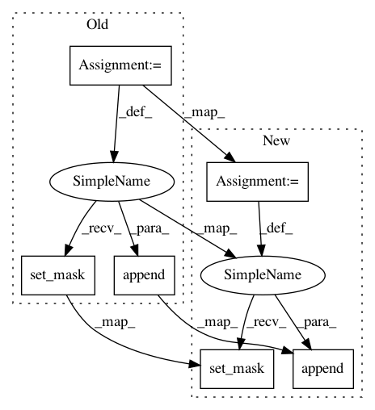

dc9aafd83851f7c55c6fe61702e281856ec023ca,models/modules/shift_unet.py,InceptionUnetSkipConnectionBlock,__init__,#InceptionUnetSkipConnectionBlock#Any#Any#Any#Any#Any#Any#Any#Any#Any#Any#Any#Any#Any#,387
Before Change
// As the downconv layer is outer_nc in and inner_nc out.
// So the shift define like this:
shift = InnerSoftShiftTriple(opt.threshold, opt.fixed_mask, opt.shift_sz, opt.stride, opt.mask_thred, opt.triple_weight)
shift.set_mask(mask_global, 3, opt.threshold)
shift_list.append(shift)
// Add latent constraint
// Then add the constraint to the constrain layer list!
innerCosBefore = InnerCos(strength=opt.strength, skip=opt.skip)
After Change
if shift_layer:
// As the downconv layer is outer_nc in and inner_nc out.
// So the shift define like this:
shift = InnerSoftShiftTriple(opt.threshold, opt.fixed_mask, opt.shift_sz, opt.stride, opt.mask_thred, opt.triple_weight)
shift.set_mask(mask_global, 3, opt.threshold)
shift_list.append(shift)
// Add latent constraint
// Then add the constraint to the constrain layer list!
innerCosBefore = InnerCos(strength=opt.strength, skip=opt.skip)
In pattern: SUPERPATTERN
Frequency: 3
Non-data size: 6
Instances
Project Name: Zhaoyi-Yan/Shift-Net_pytorch
Commit Name: dc9aafd83851f7c55c6fe61702e281856ec023ca
Time: 2018-12-13
Author: yanzhaoyi@outlook.com
File Name: models/modules/shift_unet.py
Class Name: InceptionUnetSkipConnectionBlock
Method Name: __init__
Project Name: Zhaoyi-Yan/Shift-Net_pytorch
Commit Name: 18b67291468f221efa4445edade4fb848f419b23
Time: 2019-01-27
Author: yanzhaoyi@outlook.com
File Name: models/modules/shift_unet.py
Class Name: UnetSkipConnectionShiftBlock
Method Name: __init__
Project Name: Zhaoyi-Yan/Shift-Net_pytorch
Commit Name: 3312380c4983dc6f7aff4488ccdd2c6167803c30
Time: 2019-02-27
Author: yanzhaoyi@outlook.com
File Name: models/modules/shift_unet.py
Class Name: InceptionShiftUnetSkipConnectionBlock
Method Name: __init__